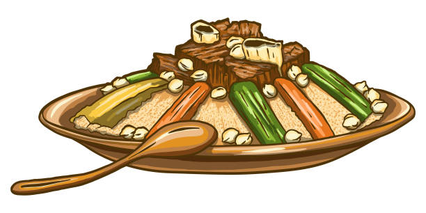

back to main
Couscous Recipe

Description
Couscous is the Moroccan most famous dish that contains different vegetables covering the outside
with the beef meat from the inside making it not only a normal dish but a Masterpiece.
Ingredients
- 1 ¼ teaspoons ground cumin
- ½ teaspoon ground ginger
- ¼ teaspoon ground cloves
- ⅛ teaspoon ground cayenne pepper
- ½ teaspoon ground cardamom
- ¼ teaspoon ground coriander
- ¼ teaspoon ground allspice
- 1 tablespoon olive oil
- 1 red onion, cut in half and thinly sliced
- 1 red, green, or yellow bell pepper, cut into 1-inch pieces
- 2 zucchinis, halved lengthwise and cut into ¾-inch pieces
- ½ cup golden raisins
- 1 teaspoon kosher salt
- grated zest of one orange
- 1 (14.5 ounce) can low-sodium chickpeas, rinsed and drained
- 1 ½ cups chicken broth
- ½ cup orange juice
- 1 ½ cups couscous
- 3 tablespoons chopped fresh mint
Steps
- Place a large, heavy bottomed pot over medium heat.
Stir in cumin, ginger, cloves, cayenne, cardamom, coriander, and allspice;
gently toast until fragrant, about 2 to 3 minutes. Stir in oil and onion,
cook until softened. Stir in bell pepper and zucchini; cook for 5 minutes.
Stir in raisins, salt, zest, and chickpeas.
- Pour in chicken broth and orange juice; turn heat to high and bring to a boil.
When the mixture is boiling, stir in couscous and remove from heat;
cover, and let stand 5 minutes. Fluff with a fork, and fold in chopped mint.
back to top